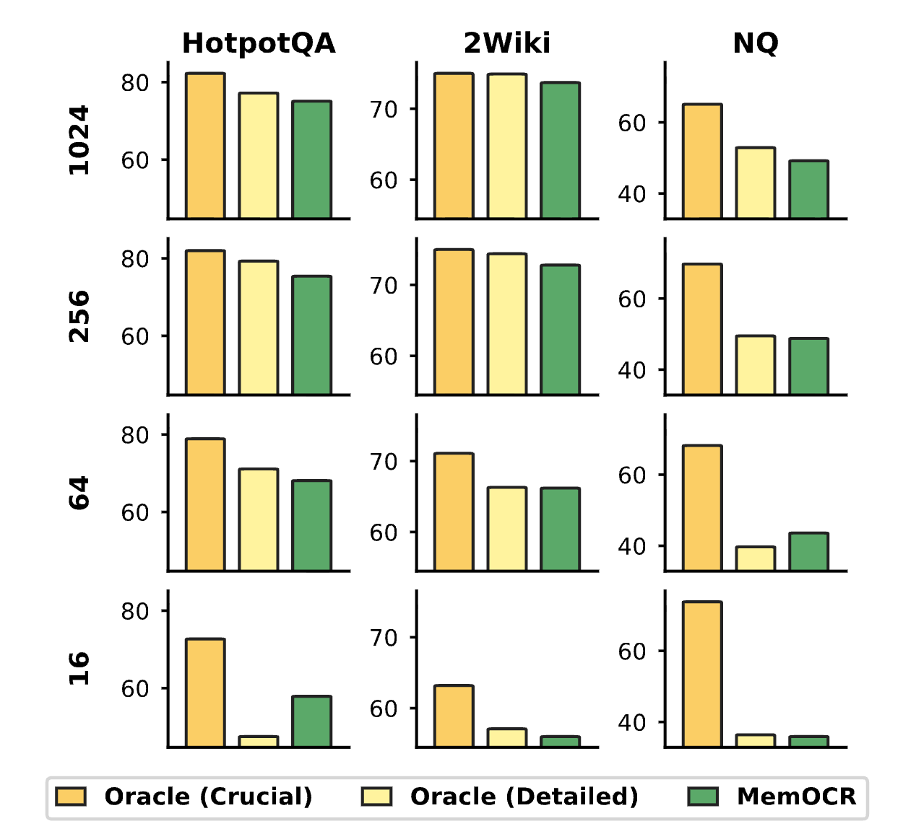
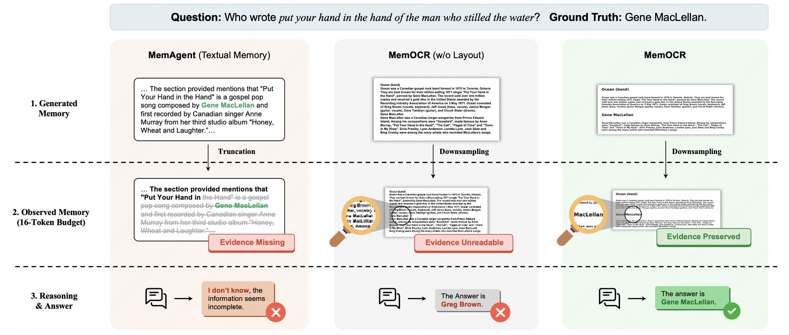

Long-horizon agentic reasoning necessitates effectively compressing growing interaction histories into a limited context window.
Most existing memory systems serialize history as text, where token-level cost is uniform and scales linearly with length (uniform information density), often spending scarce budget on low-value details.
We propose a paradigm shift from 1D textual memory to 2D visual memory by introducing MemOCR, a multimodal memory agent that improves long-horizon reasoning under tight context budgets by allocating memory space with adaptive information density through visual layout.
Rather than using uniform text encoding, MemOCR renders structured rich-text memory (incorporating headings, highlights, and font sizes) into visual images that can be read via OCR-like processing.
This approach allows adaptive information density: important evidence is assigned higher visual priority (e.g., prominent headings or bold text), while auxiliary details are compressed into visually smaller text.
For a text segment of length L rendered at font scale s, the occupied area scales as O(L·s²), enabling fine-grained control over information density.
Through reinforcement learning with budget-aware objectives, MemOCR learns to preserve readability of crucial evidence even under extreme compression.
At 16 visual tokens, MemOCR preserves 62.2% average accuracy (only -16.6% relative drop), while text-based baselines collapse to 31.6% (−53.3% drop).
MemOCR allocates memory budget via visual layout to achieve adaptive information density, achieving 8× token-efficiency gains at extreme budgets.
Method
Two-Stage Memory System
MemOCR operates through two distinct stages: memory drafting in the text domain and memory reading in the vision domain.
Memory Drafting (Text Domain)
The agent maintains a persistent rich-text memory in Markdown format, incrementally updated with incoming information.
Crucially, important evidence is assigned higher visual priority (e.g., prominent headings or bold text), while auxiliary details are compressed into visually smaller text.
This design enables non-uniform budget allocation without conditioning on runtime constraints.
Memory Reading (Vision Domain)
The rich-text memory is rendered deterministically into a 2D image using a Markdown-to-HTML-to-screenshot pipeline (FastAPI/Playwright with Chromium backend).
The agent then reads this visual memory using a vision-language model (Qwen2.5-VL-7B-Instruct) to answer queries.
Budget control occurs through resolution manipulation: for a text segment of length L rendered at font scale s, the occupied area (and thus approximate visual-token cost) scales as O(L·s²).
This quadratic relationship enables fine-grained control over information density.
MemOCR system architecture: from text-based memory drafting to visual memory reading with adaptive layout.
RL Training with Budget-Aware Objectives
To prevent the shortcut of uniform text rendering, MemOCR employs three complementary training tasks optimized via GRPO (Group Relative Policy Optimization):
Standard QA (𝒯std): 512-token budget ensures global correctness
QA w/ Augmented Memory (𝒯augM): 4× per dimension downsampling (16× fewer pixels) forces crucial evidence to remain readable under compression
QA w/ Augmented Question (𝒯augQ): Detail-oriented questions on uncompressed memory preserve auxiliary information
The drafting behavior is optimized via aggregated advantages across all three tasks, while reading behaviors use task-specific advantages.
This multi-task training ensures robust performance across varying budget constraints.
Budget-aware training objectives with memory and question augmentation to prevent uniform rendering shortcuts.
Experiments
Experimental Setup
Datasets: HotpotQA (multi-hop, ~30K tokens during training), 2WikiMultiHopQA, Natural Questions, and TriviaQA, padded to 10K/30K/100K tokens at evaluation.
Baselines: Raw history (Qwen2.5-Instruct, R1-Distill Qwen, Qwen2.5-1M), textual summary (Mem0, Mem-α, MemAgent), using Qwen2.5-VL-7B-Instruct as MemOCR's backbone.
Memory Budgets: {16, 64, 256, 1024} visual tokens, mapped to pixel resolutions via 28×28 patch size calculations.
RQ1: Overall Performance
MemOCR achieves 74.6% average accuracy at 10K context with full budget, outperforming the strongest baseline (67.8%).
More importantly, at extreme budgets: MemOCR preserves 62.2% average accuracy at 16 tokens, corresponding to only a 16.6% relative drop, compared to MemAgent's collapse to 31.6% (−53.3% drop).
Single-hop tasks (NQ, TriviaQA) show counterintuitive behavior: lower budgets sometimes improve performance (e.g., TriviaQA at 10K: 80.8% at 16 tokens vs. 79.6% at 1024), suggesting sparse evidence benefits from noise filtering.
Performance comparison across different context lengths and memory budgets. MemOCR maintains robust performance even at extreme 16-token budgets.
RQ2: Visual Robustness & Token Efficiency
Removing visual layout causes marked additional degradation at low budgets, confirming that layout drives robustness.
MemOCR achieves an 8× token-efficiency gain at extreme budgets: comparable accuracy at 8 tokens to baselines at 64 tokens.
Budget robustness analysis showing MemOCR's advantage at tight constraints.

Region-wise robustness: evidence in H1 headers is consistently more compression-robust than plain text.
RQ3: Adaptive Density Emergence
During RL training, MemOCR shifts precise evidence into the crucial region (precision ↑ ~1.8×) and reduces density in the detailed region (precision ↓ ~0.46×), while crucial regions remain orders of magnitude shorter than detail sections.
This demonstrates emergent adaptive information density allocation.
Evolution of information density across memory regions during RL training.
RQ4: Ablation Study
Progressive objective removal shows that using 𝒯std alone yields weakest results, adding 𝒯augQ improves low-budget robustness, and full three-objective training provides largest gains in extreme-budget settings.
Ablation study showing the contribution of each training objective.
Qualitative Analysis
A case study at 16-token budget demonstrates: (1) Textual baseline fails via hard truncation removing critical entity "Gene MacLellan", (2) MemOCR w/o layout fails because uniform rendering becomes unreadable after downsampling to 16 visual tokens (approximately 12K pixels), (3) MemOCR succeeds by isolating "Ocean Band" and "Gene MacLellan" in visually prominent regions, preserving legibility under aggressive compression.

Qualitative comparison showing how MemOCR preserves critical evidence legibility at extreme 16-token budget through adaptive visual layout.
Conclusion
MemOCR introduces a paradigm shift in agentic memory systems by moving from linear text serialization to 2D visual layouts with adaptive information density.
Through the clever use of visual hierarchy (headings, font sizes, formatting), MemOCR enables O(L·s²) budget control that allows crucial evidence to remain readable even under extreme compression.
Our budget-aware RL training with three complementary objectives prevents uniform rendering shortcuts and teaches the agent to strategically allocate visual space.
The result is an 8× token-efficiency gain at extreme budgets, with only 16.6% relative performance drop at 16 tokens compared to 53.3% for text-based approaches.
While MemOCR demonstrates strong results on QA tasks, future work could explore transfer to planning and tool-use domains, optimize vision/OCR robustness at extreme compression, and reduce computational overhead relative to text-only baselines.
Citation
If you find this work useful, please cite:
@article{shi2026memocr,
title={MemOCR: Layout-Aware Visual Memory for Efficient Long-Horizon Reasoning},
author={Shi, Yaorui and Liu, Shugui and Yang, Yu and Mao, Wenyu and Chen, Yuxin and Gu, Qi and Su, Hui and Cai, Xunliang and Wang, Xiang and Zhang, An},
journal={arXiv preprint arXiv:2601.21468},
year={2026}
}